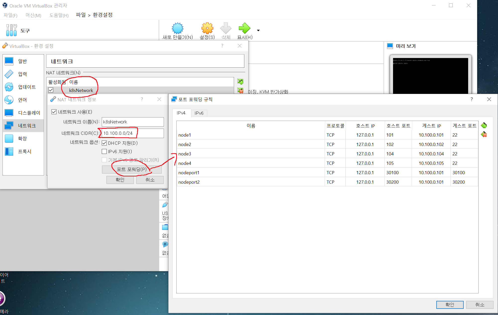

실습 환경 설치
Windows 10 기준으로 설명하고 있습니다.
VirtualBox 6.1 설치
https://www.virtualbox.org/wiki/Download_Old_Builds_6_1
ubuntu 20.04 iso파일 다운
https://releases.ubuntu.com/focal/
💡
ubuntu-20.04.5-desktop-amd64.iso 파일 다운로드
VirtualBox 네트워크 구성
파일 - 환경설정 - 네트워크
{kind=link}

10.100.0.0/24 대역대에 포트포워딩을 미리 만들어준다.
- 이는 PC에서 내부 가상 ubuntu 머신에 ssh접속을 가능하게 해준다.
- 127.0.0.1의 101포트로 ssh접속을 하게되면, 내부 10.100.0.101 22번포트로 접속을 시도하게 된다.
가상머신 만들기
CPU(2core), Memory(2GB), network(k8sNetwork), disk(20GB)
머신 > 새로만들기


가상머신 선택 > 오른쪽 마우스 버튼 > 설정

시스템 - 프로세서 - 프로세서 개수 2개로 설정
네트워크 - 네트워크 어댑터 : NAT 네트워크에 미리 만들어둔 k8sNetwork 선택

CD롬 드라이브에 다운받은 ubuntu-20.04.5-desktop-amd64.iso 파일 삽입

시작하기 누르면 가상머신이 뜨면서 ubuntu 설치가 진행됨

Ubuntu 설치
💡
우분투 설치 중, 화면이 작아서 하단 버튼이 가릴때
Alt + F7을 누른 후, 마우스 또는 키보드 화살표키로 창을 이동시키면 해결
Alt + F7을 누른 후, 마우스 또는 키보드 화살표키로 창을 이동시키면 해결
- 언어선택 : 한국어
- 키보드 : Korean (101/104 key)
- 업데이트 및 기타 소프트웨어 : 일반설치
- 설치형식 : 디스크를 지우고 ubuntu 설치
- 타임존 : Seoul
- 계정생성
- 이름 : guru
- 컴퓨터이름 : OOO.example.com
Ubuntu 설정
GUI 로그인 후, 오른쪽 상단 ▼ - 설정

디스플레이 설정 변경

네트워크 DHCP를 제거하고, 수동으로 설정

💡
적용 후, 네트워크 토글을 껐다 켜야 반영 됨

터미널 오픈

머신이름 설정 : OOO.example.com 형식으로
sudo vi /etc/hostname
cat /etc/hostname
docker-ubuntu.example.com호스트 파일 설정
sudo vi/etc/hosts
cat /etc/hosts
127.0.0.1 localhost
10.100.0.105 docker-ubuntu.example.com docker-ubuntu
10.100.0.104 master.example.com master
10.100.0.101 node1.example.com node1
10.100.0.102 node2.example.com node2
~~root 패스워드 설정
sudo passwd root
기본 프로그램 설치
#레파지토리 갱신
apt-get update
#openssh, curl, vim, tree 설치
apt-get install -y openssh-server curl vim tree
GUI모드에서 터미널모드로 변경
systemctl set-default multi-user.target💡
터미널모드에서 GUI 모드로 바꾸기
systemctl isolate multi-user.target
systemctl isolate multi-user.target
외부 SSH Tool로 접속
putty 혹은 Xshell과 같은 툴로 VM ubuntu에 ssh접속을 확인한다